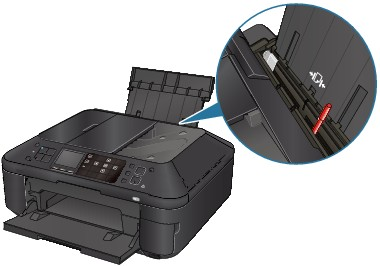

Make sure of the following:
-
Check 1: Are there any foreign objects around the Paper Output Slot?
-
Check 2: Are there any foreign objects in the Rear Tray?
If there are any foreign objects in the Rear Tray, be sure to turn off the machine, unplug it from the power supply, then remove the foreign object.
-
Check 3: Is the Rear Cover closed completely?
-
Check 4: Is the paper curled?